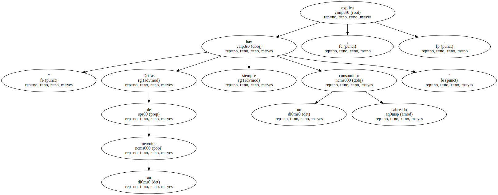
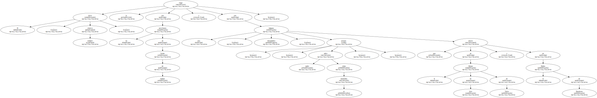
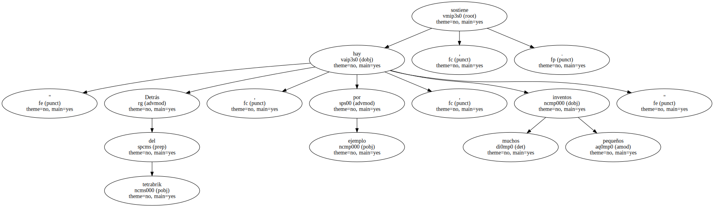
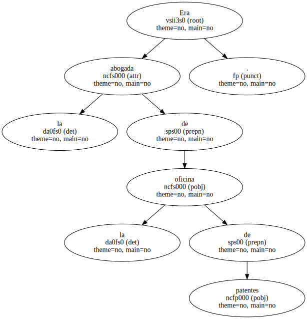

Es la recreación moderna del profesor Franz de Copenhague , que tantas tardes entretuvo a los lectores del TBO , y como él , hizo una máquina total.
Pep Torres , ingenio vivo , confiesa que lo suyo ha sido inventar desde que era un crío.
Comenzó con un reloj al que se le podían tocar las agujas y siguió con una bolsa de azúcar doble para gastar la mitad , un plato de sopa que se inclinaba por dentro , una toalla con agujero para clavar la sombrilla , un calientacuchillos para untar la mantequilla y una tapa que permitía hacer un sofrito sin que salpicara.
" Detrás de un inventor siempre hay un consumidor cabreado " , explica.
El éxito , siempre relativo , le llegó con un servilletero en forma de hamaca y con una lámpara , Abracadabra , - - porque nadie sabía cómo se enchufaba - - que estuvo en el Museo de Arte de Tokio y en el Macba de Barcelona.
De su experiencia ha escrito un libro , El manual del inventor , editado por Planeta , que pretende orientar a los neófitos en el arte de promocionar sus ingenios y congraciarles con la idea de que " si no sale bien , no pasa nada ".

" Hay que tirar por tierra tópicos como el de ' me lo van a quitar de las manos ' o ' me voy a hacer millonario ' , porque con los inventos se puede hacer dinero , pero no ser millonario ".
Que estudió psicología y ha sido compositor , creativo de Internet , fotógrafo pornográfico , ilusionista y colaborador en radio y televisión , desmiente el tópico del inventor solitario y jubilado , y apuesta por crear en grupo.
" Detrás del tetrabrik , por ejemplo , hay muchos inventos pequeños " , sostiene.
Su creatividad está tan ligada a los inventos que hasta a su mujer la conoció en el mundillo.
Era la abogada de la oficina de patentes.
